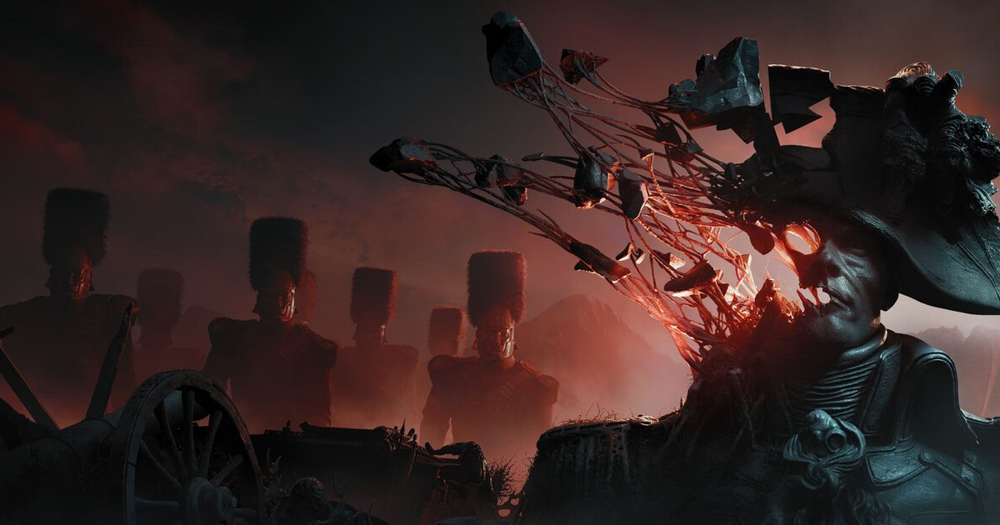

2026-10-18 · 新游深读
10 月 13 日，波兰工作室 One More Level 的新作 《Valor Mortis》登陆 PC / PS5 / Xbox Series X|S，标准版 39.99 美元，首发当日进 Xbox Game Pass Ultimate 与 PC Game Pass。这家工作室之前的名字挂在《Ghostrunner》和《Ghostrunner 2》上——两个以"一击必杀、全程冲刺、死了立刻重来"著称的速度型游戏。这次他们做的是第一人称魂系。媒体分出了明显的层：Metacritic PC 版 77（44 家）、PS5 版 79，Insider Gaming 给了 9 分并称它是"魂系游戏的世代飞跃"，Game Informer 只给 70，法国 Gamekult 给 50 并建议等补丁。真正值得聊的不是"这次换视角成不成立"，而是他们把一个速度工作室的核心资产，从主轴降级成了奖励——以及这个决定付出的代价。

你扮演威廉（William），拿破仑大军里一名普通士兵。他死了，然后在废墟战场上醒来，皇帝的声音直接在他脑子里说话。从这一刻起，威廉按拿破仑的命令行事，左手逐渐获得类似《生化奇兵》的超能力：控火、时间操控、停滞。
武器库不大但分工清楚：手枪、远程滑膛枪、军刀 / 细剑 / 阔剑三选一、喇叭铳（blunderbuss，近距霰弹性质）、以及一只火焰手。你的敌人是被诅咒复活的拿破仑残兵，和被这场战争留下的平民——他们不是传统僵尸，是一种被形容为"脓包、溃烂的坏死瘟疫"（necro-blight）的东西，这也是它被反复称赞的美术底子。Kotaku 的 Ian Walker 直接说这是数年来最好的美术指导之一。
魂系该有的它全有：篝火式的休息点、治疗瓶、死亡掉落且必须回去捡的主货币、压迫感十足的多阶段 Boss。但它在后半段开始往外长东西——第一人称跑墙、钩索摆荡、杆摆、在收缩平台之间跳跃、慢动作。这些是 Ghostrunner 的肌肉记忆，被塞进了一个前二十小时都在教你慢下来的游戏里。
这是我最想说清楚的一点。外界很容易把《Valor Mortis》读成"Ghostrunner 团队转做魂系"，好像是一次改行。但从结构上它更像一次资源重排：跑墙、钩索、急停、瞬时反应——这些曾经是整个游戏主轴的东西，被拆下来，放到了进度后半段才解锁。
效果是明确的：前面二十小时是慢的、慎重的、以弹反为核心的；一旦跑墙和钩索进包，节奏陡然抬起来，探索层也跟着变成立体的。有评测把它形容成"给一套慢速 deliberate 的玩法突然灌进一股速度感"，并且坦率地补了一句——这些段落让他更怀念 Ghostrunner，而这大概是开发者不想要的副作用。
这个副作用恰恰是判断这款游戏的关键。当一段内容让你想起另一款更好的游戏时，它就同时是优点和罪证。它解开了魂系后半段常有的"重复疲劳"，但也承认了一件事：这套 traversal 系统的密度，本来是配得上当主菜的。
几乎所有好评都会夸"第一人称很新鲜"，几乎所有差评也都在骂同一件事。这不是巧合——第一人称在魂系里同时是创新和负债。
魂系战斗的完整循环有三步：读招 → 空间站位 → 惩罚窗口。第一人称把第二步砍掉了一大半。GamingBolt 明确点出它限制了情境感知，侧面和身后的敌人明显更难追踪；LT3 则说它很容易被地形卡住——在一个需要不断后撤、绕圈、拉开距离的战斗系统里，"被墙角卡住"不是小瑕疵，是致命的。TechRadar 也批评了视野问题。GamesRadar 的评语最狠： enjoyable 归 enjoyable，但"换个视角本身不足以让它出众"，玩法"比我的影子还熟悉"。
反过来说，第一人称确实给了一个第三人称永远给不了的东西：挨打的位置感。敌人贴到你脸上时，你失去的不是血条上的数字，是你的取景框。这种压迫在《生化奇兵》式的左手能力和近距离弹反里被放大了——弹反的判定从"看动画"变成"看它离你的眼睛还有多远"，这在手感上是真实的增量。所以这笔债不是白欠的，只是它换来的东西比它花掉的小。
这是我认为最该被讨论、也最可能被补丁修掉的问题。Game Informer 在九月的预览里就用了"incredibly uneven"（极不均匀）这个词：普通敌人打出小 Boss 级的伤害，Boss 惩罚重到让你没有学习窗口。Games24 的评测作者统计自己死了一百多次，然后写下一句我认为是今年最好的一句评测判断——
"我死了一百多次，我只希望其中更多次能教会我点什么，而不只是让我恼火。"
这句话把"难"和"没教"分开了。魂系的难是有教学密度的：每一次死亡都应该对应一条你刚学会的信息。前五小时的《Valor Mortis》里，死亡常常不携带信息——一次命中直接带走你，却不告诉你错在哪。而到了后半段，随着耐力、血量、武器的成长，它自己把自己调平了：不是设计改好了，是数值把你抬过了那道坎。
换句话说，它的难度曲线问题本质是一笔教学负债：把应该在教学期支付的说明成本，拖到中期用数值补偿。这也解释了为什么各家评分会拉得那么开——你前十小时遇到的是哪个版本，基本决定了你会给它 50 还是 9 分。
| 作品 | 视角 | 怎么处理"身后的敌人" | 结果 |
|---|---|---|---|
| Dark Messiah（2006） | 第一人称 | 靠踢击与狭窄地形，主动减少包围 | 近战手感封神，但群战始终吃亏 |
| Kingdom Come: Deliverance（2018） | 第一人称 | 用锁定与方向指示强行补感知 | 一对一尚可，多打一长期是痛点 |
| Hellblade（2017） | 第三人称 | 用声音提示身位，把感知做成叙事 | 目前最优雅的解法 |
| Lords of the Fallen / 传统魂系 | 第三人称 | 镜头天然给出 360° 站位信息 | 空间站位成为核心乐趣 |
| Valor Mortis（2026） | 第一人称 | 基本没补，靠分段小场景缓解 | 弹反手感成立，群战与地形卡位失分 |
一摆就清楚了：第一人称近战动作游戏二十年来都在同一个问题上打转，而真正漂亮的答案（Hellblade 用声音替代视野）来自一款压根不做多打一的游戏。《Valor Mortis》既要做群战又要第一人称，却没给出新的解法——这是它最实质的短板，比"剧情平淡"严重得多。
扣分项集中在三处，且都不是"水平不够"而是"决策偏差"：难度曲线的教学负债、第一人称群战无补偿、以及剧情几乎没有野心（GameSpot 说它 frustratingly straightforward，我同意——"拿破仑为什么在你脑子里"这个问题的答案，比我自己在玩之前脑补的还要无聊）。加分项是美术、题材与弹反手感，这三项都有同类里稀缺的价值。
魂系的世界观已经高度内卷：要么是腐朽的中世纪城堡，要么是克苏鲁化的维多利亚，要么是废土。GamingBolt 那句"拿破仑背景有多罕见"说到了点子上——它带来了历史真实感，替代了魂系惯用的模糊神话。一个真实的、有名字的、被记载的战争，比"某个被遗忘的王国"更有锚点：你知道那套军装是真的，那把滑膛枪是真的，那片战场是真的。当超自然元素入侵一个你认得出来的历史现场时，惊悚度比凭空造一个世界要高。这是它最被低估的一张牌。
全线评测里被反复提及、却很少被放进标题的，是那条叫 The Mice（鼠群）的支线：一群在拿破仑战争中失去家园的孤儿，在找另一种领袖。它明显受《生化奇兵》Little Sisters 启发，甚至包含一套被刻意模糊处理、影响后期几段剧情的道德计数系统。
我的看法是：这条支线才是《Valor Mortis》真正想做的东西，主线才是凑数的。它把一个"皇帝在你脑子里下令"的设定，落到了"被命令的人到底该听谁的"这个具体问题上。可惜它被塞进支线，容易错过，而且做得不如它的灵感来源。如果这家工作室还有下一次，把 Mice 提到主线上，把拿破仑那套主线砍成背景，评级会完全不同。
《Valor Mortis》不是《Ghostrunner》团队的一次改行，是一次清醒的资产重排——他们知道自己最擅长什么，然后把那份擅长从"整个游戏"缩到"后半段的奖励"，用一套慢的魂系骨架撑住前二十小时。这个判断有胆量，也有代价：第一人称的感知债没有偿还方案，难度曲线的教学负债被拖到中期靠数值填平，主线剧情几乎没有野心。
但它的题材、美术与弹反手感是真的稀缺，而且它把试错成本压到了零——没有预购、Game Pass 首发、PS Plus 试玩进度可继承、Steam 有免费 demo。在一个把 39.99 美元当赌注的月份里，这大概是你能做的最便宜的一次判断。
先跑 demo，记录前十次死因，再决定要不要把那二十小时交出去。如果你熬过了前五小时，后半段会还你一点东西——只是它还得先证明，那些死教会了你什么。